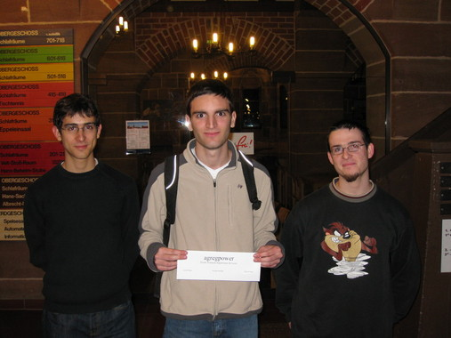

Results
Contest Results
Final Standings
Standings before Freeze (after 4 hours)
Submissions
Problemset (PDF)
Example Solutions (ZIP)
Solution Outlines (PDF)
Practice Session (PDF)
Winner
The Winner of the South Western European Regional Contest 2008 is the team 'agregpower' from Lyon solving 7 problems in a total of 1314 minutes.
Congratulations! 